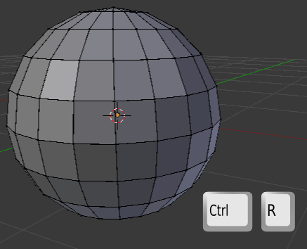
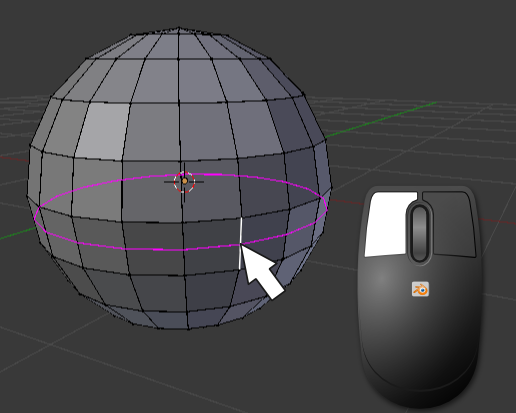
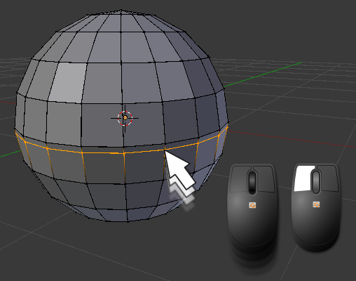
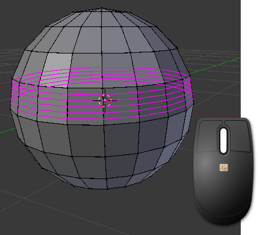

Añadir bucles
Las primitivas vienen con una serie de vértices definidos y la extrusión nos permite generar nuevas caras y comenzar a modelar en el sentido 3D del término. Pero es seguro que en ese proceso de modelado necesitemos añadir un nuevo bucle de bordes.
La edición requiere tres decisiones:
- Activarla (obvio).
- Escoger el bucle de facetas que se va a dividir.
- Escoger la localización del nuevo bucle de bordes dentro del bucle de facetas.
Lo anterior puede que haya sido excesivamente abstracto por lo que vamos a verlo en el terreno:
- Activar la edición. Como ya es costumbre en Blender lo mejor es usar el atajo de teclado con "Control_R" (debemos estar en Modo Edición
 ). Aparentemente no habrá ocurrido nada pero no es cierto. Es algo similar a la orden de extrusión ("E") o la de duplicado ("Shift_D"): la orden está dada y Blender se mantiene a la espera de nuevas órdenes.
). Aparentemente no habrá ocurrido nada pero no es cierto. Es algo similar a la orden de extrusión ("E") o la de duplicado ("Shift_D"): la orden está dada y Blender se mantiene a la espera de nuevas órdenes.

- Escoger el bucle de facetas que se va a dividir. Debemos colocar el puntero del ratón sobre uno de los lados que cruza el bucle de facetas al que le queremos añadir un nuevo bucle. Aparece uno virtual de color fucsia. Cuando decidimos el bucle de facetas a dividir hacemos clic izquierdo.

- Escoger la localización del nuevo bucle de bordes dentro del bucle de facetas. Al hacer el clic izquierdo anterior el bucle se vuelve amarillo y se nos permite desplazarlo para definir su localización definitiva. Cuando la decidamos terminamos con clic izquierdo.

Múltiples bucles de bordes
Cuando nos encontramos en el segundo paso, mientras Blender nos ofrece bucles en fucsia podemos girar la rueda del ratón y aumentar así el número de bucles a añadir.
Una de las particularidades de esta modalidad es que al hacer clic izquierdo se termina la edición debido a que no se nos permitirá el tercer paso de desplazarlos; Blender los distribuirá proporcionalmente.
¿Recuerdas la actividad en la que creaste la letra "E" con extrusiones? ¿Se te ocurre cómo usar lo aprendido en esta lección para hacer el mástil vertical de la letra garantizando que las cinco divisiones sean iguales?